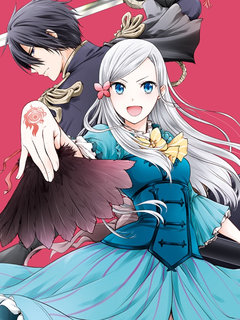
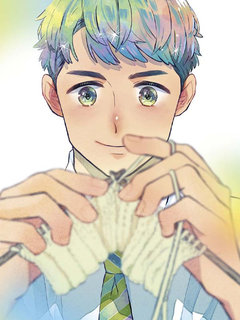
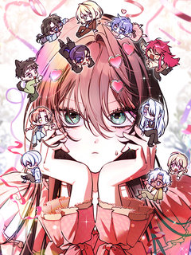
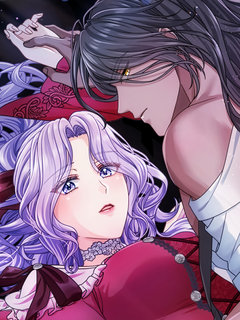
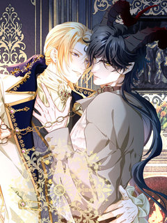
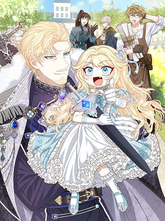
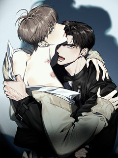

레진코믹스 추천 인기 순위 TOP 30
레진코믹스에서 지금 연재 중인 작품을 레진코믹스 공식 인기 순위 순서로 모았어요. 네이버웹툰·카카오웹툰·레진코믹스에서 조건에 맞는 작품 439개 중 인기 순으로 30개를 골랐어요. 인기 TOP 3: 남고 소년, 게임은 살인이다, 오류탐구영역
2026-10-26 기준 · 성인 작품 제외
내 취향으로 더 좁혀서 추천받기 →-
1
 레진코믹스
레진코믹스남고 소년
대문 남고의 유일한 홍일점인 '홍일탁'. 물론 이름과 별명과는 다르게 남자다. 왜소한 체격과 곱상한 외모 덕분에 찐따부터 일진에 이르기까지 자신을 무시하기에 이르고 교내 서열 꼴찌에 머무르고 있었다. 과거, 중학교 2학년까지만 해도 유명한 일진이었던 일탁은 자신의 한 문제로 인해 먹이…
BL개그성장물숏드라마스낵타임레진코믹스에서 보기 → -
2
 레진코믹스
레진코믹스게임은 살인이다
정체불명의 가상현실 게임 '케이지' 자신과 인연이 있던 스승이자 어린아이인 <요를>을 GM인 유타기의 손에 잃고나서 유타기를 진심으로 죽이기 위한 방법을 찾기 위해 강해질 방법을 찾게 되는데... <내게 게임은 살인이다>의 정식 후속작.
게임소년물SF성장물판타지레진코믹스에서 보기 → -
3
 레진코믹스
레진코믹스오류탐구영역
중학생 때까지 전교 1등을 놓쳐본 적 없는 '오승표'는 고등학교 진학 후 '류재민'에게 전교 1등 자리를 뺏기고 만다. 전교 1등은 류재민, 전교 2등은 오승표. 아무리 열심히 공부해도 이 순서를 뒤집을 수가 없다. 태어나 처음으로 느끼는 열등감에 승표는 저도 모르게 재민을 계속 지켜…
학원물혐관배틀연애BL레진코믹스에서 보기 → -
4
![레가스 [연재] 표지](../../thumbs/lezhin/4926773083701248.jpg)
-
5
 레진코믹스
레진코믹스나의 천사를 찾아서
첫눈에 반해 결혼을 약속한 천사 같았던 옆집 여자아이. 10년 뒤 거구의 남성이 되어 돌아오다…!? 미국의 한 작은 마을에서 살고 있는 한국계 미국인 유진 킴. 10년 만에 옆집으로 돌아온 첫사랑 모건 라일리와 재회하지만, 눈앞에 나타난 건 거구의 금발 남성이 된 모건. 유진은 자신이…
떡대수상처공평범공키작공재회레진코믹스에서 보기 → -
6

-
7
 레진코믹스
레진코믹스지상낙원의 부적응자
플로리다에 머무른지 3년째인데도 영어를 못 하는 괴짜 이탈리안 살보 비갈리. 그는 세계적인 작가임에도 호텔 대신 플로리다의 낡은 모텔에서 누군가를 기다리며 말라가고 있다. 고향 시칠리를 그리워하던 살보는 순전히 고향의 억양을 쓴단 이유로 처음 만난 건달 청소부 벤을 자신의 조수 겸 영…
까칠수혐관연상수성장물연하남레진코믹스에서 보기 → -
8
![몸캠 BJ의 이중생활 [연재] 표지](../../thumbs/lezhin/7011776929129080.jpg) 레진코믹스
레진코믹스몸캠 BJ의 이중생활 [연재]
본부장님, 아니 Daylightx씨, 전 당신의 비밀을 전부 알고 있어요- 밤에는 백만 팔로워를 가진 벗방 스트리머 Daylightx로, 낮에는 평범한 회사원 임성현으로 이중생활을 하던 도중, 누군가 내 정체를 알아챘다.
능력공까칠수오해/착각능력수현대물레진코믹스에서 보기 → -
9

-
10

레진코믹스나는 편의주의적 해결 담당 왕녀로소이다
즐겨 읽었던 BL 소설 세계에서 다시 태어난 왕녀, 옥타비아. 이 세계에서는 BL(♂X♂)의 룰를 유지하기 위해 \\
판타지환생레진코믹스에서 보기 → -
11
 레진코믹스
레진코믹스킬러가 사랑에 빠졌을 때
[속보] 프로 킬러 주태만이 국내 최고의 배우 강다혁에게 반해버렸다! 극강의 훈련과 교육 그리고 잔인한 고문도 견뎌낸 프로 킬러 주태만, 그러나 어째서인지 강다혁의 다정함에는 손쉽게 무너지는데...? ㅡ 프로킬러 NN년차, 설마 이게 바로 사랑? 그러면 이럴 때는 어떻게 해야 하지?
직진수헌신수능력수얼빠수미남공레진코믹스에서 보기 → -
12
![원룸 조교님 [개정판] 표지](../../thumbs/lezhin/7011781499120795.jpg) 레진코믹스
레진코믹스원룸 조교님 [개정판]
2학년으로 복학한 우윤은 묘한 매력의 행정실 조교님 진형을 만나고, 냅다 고백한 결과 원룸에서 동거를 시작한다! 동거 일주일이 되던 날, 우윤의 농도 깊은 키스에 스킨십에 대한 남다른 환상이 있다며 기다려 달라는 진형. 대체 그 환상이 뭔데!? 그들은 모든 환상과 망상을 딛고 무사히…
미남수연상수미인공동거캠퍼스레진코믹스에서 보기 → -
13
 레진코믹스
레진코믹스불멸의 날들
오랜 연구 끝에 인류는 더이상 죽지도 다치지도 않게 된다. 하지만 언제나 돌연변이는 존재하는 법. 죽을 수 있는 존재로 태어난 '멸'은 불사의 사람들 사이에서 갖은 고생을 하며 살아간다. 외로이 고군분투를 하며 지내던 때, 멸은 자신과 같은 돌연변이 해결사 '필'을 만나게 된다. 그리…
액션레진코믹스에서 보기 → -
14
 레진코믹스
레진코믹스이상하고 아리타운
아무도 손대기 싫어하는 흔적들을 치우는 특수청소부 '이상하'는 청소 중 낡은 부적들을 별 생각 없이 찢어버리게 된다. 그 순간 보이지 말아야 할 것들이 보이기 시작한다. 나를 쫓아오는 백골의 귀신들, 그리고 단숨에 그 귀신들을 처리해버린 이상하고 아름다운 도깨비까지.
2코인상처녀오컬트능글남동양레진코믹스에서 보기 → -
15

레진코믹스니터스 하이!
중학교 때는 전국 대회도 바라보는 우수한 육상 선수였으나, 부상 때문에 경기에서 멀어져 버린 하마나카 켄토. 실의에 빠진 채 고등학교에 입학한 켄토는 수예부 입부를 권유받지만, \\
성장물학원물드라마레진코믹스에서 보기 → -
16

레진코믹스두근두근 공략기 [연재]
하렘이야말로 미연시의 메인 콘텐츠다! 밤새 미뤄뒀던 게임을 하다 잠이 든 다은은 다른 세계에서 처음 보는 인물이 되어 눈을 뜬다. 온통 처음 보는 것들과 마주하고 당황한 것도 잠시, 이곳이 ‘미연시’ 게임 속임을 파악하고 ‘디아나 블량쉐’가 되어 주위 캐릭터들을 공략하기 시작한다. 디…
능력녀회귀역하렘게임로판레진코믹스에서 보기 → -
17레진코믹스
페이트 메이트 [개정판][연재]
알파인 동시에 오메가인 특이형질 때문에 베타 전용 기숙사에 입소하게 된 세현. 깔끔하고 싹싹한 룸메이트 준후를 만나 운이 좋다고 생각하고 있었는데... 준후도 자신처럼 형질을 숨기고 베타 기숙사에 들어온 것임을 알게 된다. 심지어 준후의 형질은 알파?! 오메가 형질이 불안정한 세현은…
외유내강수연상수집착물미인공연하남레진코믹스에서 보기 → -
18
 레진코믹스
레진코믹스사기 결연 신고합니다
가상 현실 MMORPG 부문 국내 1위 게임 <천풍>. 간만의 대규모 업데이트에 설레 점검이 끝나자마자 들어왔는데. ‘어라?’ 누군가 먼저 내 메인 퀘스트를 건드렸다. 던전 입장 제한이 걸린 걸 깨닫자마자 발걸음을 돌렸다. 어떤 놈인진 몰라도, 두 번째부터는 순조롭지 않을 거다. <숨…
까칠수까칠공오해/착각능력수헌신남레진코믹스에서 보기 → -
19
 레진코믹스
레진코믹스사랑은 환상! ~슈퍼스타~
혜성과 도진의 아들인 '박별' 은 예전에는 아이돌 연습생이었으나 현재는 그만두고 평범한 고등학교 생활을 보내고 있다. 갑작스럽게 동생이 생겨 혼란스러운 와중에, 별은 한동안 소원해졌던 소꿉친구 '시우'가 자꾸만 눈에 밟히게 되는데.. 꿈과 우정(?)을 찾는 별이의 반짝반짝 하이틴 성장…
월드드랍WorldDrop학원물성장물능력수레진코믹스에서 보기 → -
20

레진코믹스악녀는 흑화한 공작님만 공략할 수 있다 [연재]
사망 엔딩 피하려다 흑화한 공작이 달라붙었다! 미움받지 않기 위해 늘 눈치를 보며 살아온 나사랑. 불의의 사고 후, 좋아하던 연애 시뮬레이션 게임 속 악녀 '안네리제'로 환생한다. 모두에게 미움받고 죽는 운명을 바꾸고, 이번 생엔 단 한 사람에게라도 사랑받고자 원작의 전개를 거스르려…
평범녀상처남소심녀로판집착남레진코믹스에서 보기 → -
21

-
22
![짐승의 낙원 [개정판][연재] 표지](../../thumbs/lezhin/7011772775028967.jpg) 레진코믹스
레진코믹스짐승의 낙원 [개정판][연재]
이고요는 고아치고는 운이 좋은 아이다. 14년 전 납치 사건에서 검사 아들과 함께 구조되어, 차장 검사였던 이의택의 수양딸이 되었으니까. 하지만 그녀가 잡은 건 달콤한 막대 사탕이 아니라 지옥문의 손잡이였다. 이의택 부자와 함께하게 된 대가로 이고요는 그들의 인형이자, 개가 되었다.…
상처녀직진남순진녀재벌남나쁜남자레진코믹스에서 보기 → -
23레진코믹스
석류를 삼킨 뱀 [개정판][연재]
대륙에서 가장 부유하고 광활한 땅 ‘트라스타사’는 전능한 신 아몬과 그의 반려 나인이 다스린다. 완벽한 낙원처럼 보이는 아름답고 화려한 신전과, 나인에겐 한없이 다정한 불로불사의 신 아몬. 하지만… \\
다정수상처수미남공인외존재대형견남레진코믹스에서 보기 → -
24
 레진코믹스
레진코믹스안녕, 나의 폐하
*15세 이상 이용가능 *본 작품은 픽션이며 등장하는 인물, 사건, 지명 등은 실존하는 것과 일체 관계가 없습니다. 고대 이집트에 관심이 많은 의대생 장이현. 그는 유적을 보기 위해 이집트로 답사를 떠났다가 넓은 유적에서 길을 잃고 도굴꾼들과 맞닥뜨리게 된다. 이현은 그들에게 붙잡혀…
강공회귀궁중로맨스능력수BL레진코믹스에서 보기 → -
25

-
26
 레진코믹스
레진코믹스부랄친구
낭랑 18세의 지은은 길건너 옆집에 사는 민철과 10년도 더 된 부랄친구다. 남녀사이에 친구는 없다지만 꾸준히 둘은 친구임을 주장하고 있기를 10여년.. 하지만 아침에 함께 등교, 하교도 같이, 아프면 병문안, 놀러갈 때도 단둘이.. 이런 둘이 정말 단순한 친구 사이로 남을 수 있을까…
학원물러브코미디소꿉친구썸개그레진코믹스에서 보기 → -
27

레진코믹스황태자의 용으로 태어났다 [연재]
장래 유망한 대학생인 나, 강찬영은 누군가에게 의문의 죽임을 당한 뒤 <황태자와 드래곤>이라는 게임 속 인물로 환생했다. 정확히 말하면 황태자에게 처치당할 운명인 보스, 검은 드래곤 '인페르노’로! 이제부터 내 목표는 운명을 바꾸는 거다. 그런데- “황태자님, 이거 스토리랑 뭔가 다르…
빙의설렘폭발궁중로맨스인외존재헌신수레진코믹스에서 보기 → -
28

레진코믹스최강자 공작님의 하나뿐인 손녀딸입니다 [연재]
주님, 오늘도 정의로운 영업방해를 할 수 있게 해주세요. 그래야 우리 아빠가 죽지 않을 테니까요. *** 용사 파티를 위해 제 생명을 깎아 가며 무기를 만들다 죽는 무기공. 이 미련한 인간이 내 아빠다. 나는 미래를 깨닫자마자 아빠를 살리기 위해 특단의 조치를 취하기로 했다. 그건 바…
까칠남힐링육아물능력녀로맨스레진코믹스에서 보기 → -
29

레진코믹스인과응보 [개정판][연재]
[5회 연재 후 1회 정기 휴재] 대학교 술자리에서 만나 서로에게 이끌려 하룻밤을 보낸 뒤 연인이 된 이주헌과 서강우. 강우는 평범한 연애를 기대했지만, 중요한 순간마다 감정이 결여된 것처럼 거칠고 제멋대로 구는 주헌을 견디다 못해 결국 이별을 고한다. “넌 누굴 좋아할 수 없는 인간…
상처공짝사랑다정수개아가공후회수레진코믹스에서 보기 → -
30